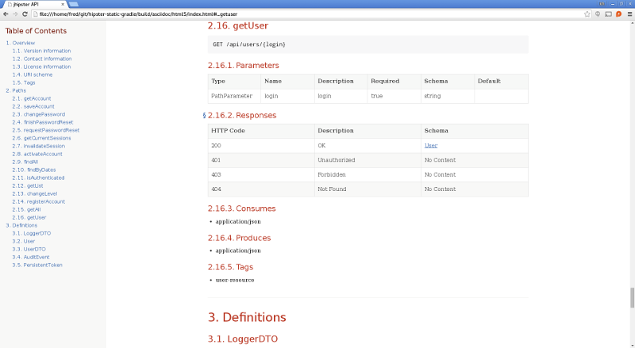

Tip submitted by @atomfrede
You should use the new swagger2markup module instead of following this tip! See the JHipster Marketplace for details about the module system.
If you want to generate static API documentation (and combine it with hand-written documentation), Swagger2Markup provides an easy way to combine auto-generated API documentation produced by Swagger with hand-written documentation into an up-to-date, easy-to-read, on- and offline user guide in HTML, PDF and EPUB.
Add the following to your project dependencies:
<dependency> <groupId>io.springfox</groupId> <artifactId>springfox-staticdocs</artifactId> <version>${springfox.version}</version> <scope>test</scope> </dependency>
Add the following to the plugin section:
<plugin> <groupId>org.asciidoctor</groupId> <artifactId>asciidoctor-maven-plugin</artifactId> <version>1.5.2</version> <executions> <execution> <id>output-html</id> <phase>test</phase> <goals> <goal>process-asciidoc</goal> </goals> <configuration> <backend>html5</backend> <outputDirectory>${project.build.directory}/docs/html</outputDirectory> </configuration> </execution> <execution> <id>output-pdf</id> <phase>test</phase> <goals> <goal>process-asciidoc</goal> </goals> <configuration> <backend>pdf</backend> <outputDirectory>${project.build.directory}/docs/pdf</outputDirectory> </configuration> </execution> </executions> <dependencies> <dependency> <groupId>org.asciidoctor</groupId> <artifactId>asciidoctorj-pdf</artifactId> <version>1.5.0-alpha.8</version> </dependency> </dependencies> <configuration> <sourceDirectory>src/docs/asciidoc</sourceDirectory> <sourceDocumentName>index.adoc</sourceDocumentName> <attributes> <doctype>book</doctype> <toc>left</toc> <toclevels>2</toclevels> <generated>${project.build.directory}/docs/asciidoc/generated</generated> </attributes> </configuration> </plugin>
In src/test/rest create a new class called Swagger2MarkupTest:
src/test/rest
Swagger2MarkupTest
@RunWith(SpringJUnit4ClassRunner.class) @SpringApplicationConfiguration(classes = Application.class) @WebAppConfiguration @IntegrationTest public class Swagger2MarkupTest { private static final String API_URI = "/v2/api-docs"; @Inject private WebApplicationContext context; private MockMvc mockMvc; private File projectDir; @Before public void setup() throws IOException { this.mockMvc = MockMvcBuilders.webAppContextSetup(this.context).build(); ClassPathResource pathfileRes = new ClassPathResource("config/application.yml"); projectDir = pathfileRes.getFile().getParentFile().getParentFile().getParentFile().getParentFile(); } @Test public void convertSwaggerToAsciiDoc() throws Exception { Swagger2MarkupResultHandler.Builder builder = Swagger2MarkupResultHandler .outputDirectory(outputDirForFormat("asciidoc")); mockMvc.perform(get(API_URI).accept(APPLICATION_JSON)) .andDo(builder.build()) .andExpect(status().isOk()); } private String outputDirForFormat(String format) throws IOException { return new File(projectDir, "target/docs/" + format + "/generated").getAbsolutePath(); } }
Add the following dependency to your project dependencies:
testCompile group: 'io.springfox', name:'springfox-staticdocs', version: springfox_version
Add the following to your build script dependencies:
classpath 'org.asciidoctor:asciidoctor-gradle-plugin:1.5.2' classpath 'org.asciidoctor:asciidoctorj-pdf:1.5.0-alpha.8'
Apply the asciidoctor convert plugin:
asciidoctor convert
apply plugin: 'org.asciidoctor.convert'
Add the following to generate HTML and PDF:
ext { generatedAsciidoc = file("${buildDir}/docs/asciidoc/generated") } asciidoctor { dependsOn test sources { include 'index.adoc' } backends = ['html5', 'pdf'] attributes = [ doctype: 'book', toc: 'left', toclevels: '2', numbered: '', sectlinks: '', sectanchors: '', hardbreaks: '', generated: generatedAsciidoc ] }
@RunWith(SpringJUnit4ClassRunner.class) @SpringApplicationConfiguration(classes = Application.class) @WebAppConfiguration @IntegrationTest public class Swagger2MarkupTest { private static final String API_URI = "/v2/api-docs"; @Inject private WebApplicationContext context; private MockMvc mockMvc; private File projectDir; @Before public void setup() throws IOException { this.mockMvc = MockMvcBuilders.webAppContextSetup(this.context).build(); ClassPathResource pathfileRes = new ClassPathResource("config/application.yml"); projectDir = pathfileRes.getFile().getParentFile().getParentFile().getParentFile().getParentFile(); } @Test public void convertSwaggerToAsciiDoc() throws Exception { Swagger2MarkupResultHandler.Builder builder = Swagger2MarkupResultHandler .outputDirectory(outputDirForFormat("asciidoc")); mockMvc.perform(get(API_URI).accept(APPLICATION_JSON)) .andDo(builder.build()) .andExpect(status().isOk()); } private String outputDirForFormat(String format) throws IOException { return new File(projectDir, "docs/" + format + "/generated").getAbsolutePath(); } }
Create index.adoc in src/docs/asciidoc with following content:
index.adoc
src/docs/asciidoc
include::{generated}/overview.adoc[] include::{generated}/paths.adoc[] include::{generated}/definitions.adoc[]
Your static documentation is generated during the test phase of your project. You find it in src/target/docs/html or build/asciidoc/html5.
src/target/docs/html
build/asciidoc/html5

For more information (e.g. how to add hand-written documentation) see the official reference documentation.